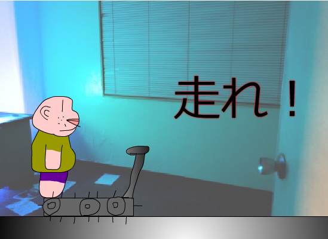
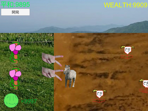
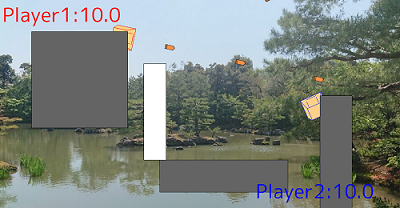

ゲームセンター
ゲームが遊べます。化石と化した過去作品はここ
Flash製
| 公開日:2013/6/3 | プレイ時間:10分 |
| 難易度：☆☆★★★★ | お勧め度：☆☆☆☆★★ |
| ひたすら銃弾や照準や爆弾から逃げ続けるゲームです。 鬼のように難しいです。 | |
| 公開日:2014/3/21 | プレイ時間:数分 |
| 難易度：☆☆★★★★ | お勧め度：☆☆☆☆★★ |
 | 飼育員を操作して檻の中のライオンを押し返して檻の外に出ないようにするゲームです。 ゲーム＆ウォッチのライオンに多大な影響を受けました。 第１３回あほげー出展作品。 |
| 公開日:2014/3/21 | プレイ時間:数分 |
| 難易度：☆☆☆★★★ | お勧め度：☆☆☆☆★★ |
 | 妖怪枕返しが日本中の寝ている人々を北枕にしていくゲームです。 しかし、最近は地球の磁場が狂い、北と南がめちゃくちゃになってしまっていろいろ苦労しているようだ。 第１４回あほげー出展作品。 |
| 公開日:2014/10/31 | プレイ時間:数分 |
| 難易度：☆☆☆★★★ | お勧め度：☆☆★★★★ |
|
無職で全財産が２万円の僕は富くじ「トミーの富くじ」で一攫千金を狙うことにした。 運や能力を鍛えつつ、無事富くじに当選しよう。 全然完成できなかったので今後もアップデート予定あります。 第１５回あほげー出展作品。 | |
| 公開日:2014/10/31 | プレイ時間:数分 |
| 難易度：★★★★★★ | お勧め度：☆☆☆☆★★ |
 |
自分だけの仔犬饅頭を作って戦わせよう！ どのように作るのかが勝利への鍵となる。 しかしバランスがとても無茶苦茶、はっきり言って一番出来がひどい。 多分今までの例やこれから忙しくなることを考えるに多分更新はないでしょう。 第１６回あほげー出展作品。 |
| 公開日:2016/3/19 | プレイ時間:30秒 |
| 難易度：☆☆★★★★ | お勧め度：☆☆☆☆☆★ |
|  |
左クリック連打でランニングマシンの上を走りダイエットをするゲームです。 早く走らないと転落死します。 製作時間が足りず残念ながら製作時間３時間の突貫工事に・・・ 第１９回あほげー出展作品。 |
| 公開日:2016/3/20 | プレイ時間:2分 |
| 難易度：☆★★★★★ | お勧め度：☆☆☆★★★ |
 |
４つの道具を駆使して雪だるま達を理想の体型にダイエットさせてあげるゲームです。 しかし跡形もなくなるぐらい溶かしてしまうとゲームオーバーになるので気を付けましょう。。 初のあほげー２作品出品にして遅刻作品。 第１９回あほげー出展作品。 |
| 公開日:2016/3/20 | プレイ時間:2分 |
| 難易度：☆☆★★★★ | お勧め度：☆☆☆☆☆★ |
|
ようじょが怪人いかのおすしから逃げるゲームです。 第２０回あほげー出展作品。 | |
Unity製
| 公開日:2016/3/28 | プレイ時間:3分 |
| 難易度：☆☆★★★★ | お勧め度：☆★★★★★ |
| いかに早くコースを一周できるかを競うレーシングゲームです。 昔未公開だった作品を手直ししてできた初めてのUnity作品。 | |
| 公開日:2018/10/7 | プレイ時間:一回１～２０分ほど |
| 難易度：☆☆★★★★ | お勧め度：☆☆☆★★★ |
|  |
グリンピースの農耕をしつつピースキャノンを使って襲撃者から文明を守り平和（ピース）を維持するというまさにピース尽くしの防衛+農業（？）ゲーム。 あまりUnityを使い慣れていなかったので完成に2晩朝まで起きてようやく完成（もちろん遅刻）。 それでも半ば作りかけなので今後も更新します。 第27回あほげー出典作品。 |
| 公開日:2019/2/10 | プレイ時間:一回1分ほど |
| 難易度：☆☆☆☆★★ | お勧め度：☆☆☆☆☆★ |
|
最終的に何羽の鳥が庭の柵の中にいるかを数えるゲームです。 良く言えばシンプル、悪くいえば発想力もゲーム性も薄味すぎていまいちなのが残念なところ。 第28回あほげー出典作品。 | |
HSP製
| 公開日:2016/3/6 | プレイ時間:一回３分ほど |
| 難易度：☆☆★★★★ | お勧め度：☆★★★★★ |
 |
独自の3Dグラフィックを用いて作ったインベーダーゲームです。 ただ、内容自体はインベーダーゲームそのものですｗ ぜひスコアアタックに挑戦してみてください。 人生で初めて作った3dゲームです。 |
Processing製
| 公開日:2018/7/8 | プレイ時間:一回2分ほど |
|  |
2つの高野豆腐が生き残りをかけて戦いを繰り広げるオフライン対戦型のサバイバルゲーム。 ゲーム内容といい名前といい完全にアウト。しかも未完成。 京大マイコンクラブ様協力のもと作りました。ありがとうございます。 |